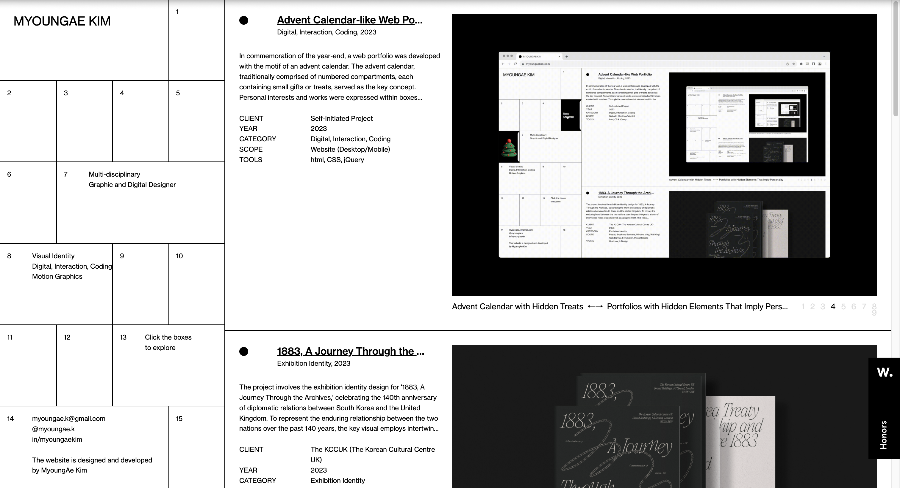

I chose..
Click image to visit website.
Prompts
1. What was the first thing you paid attention to when interacting with the experience?
My attention was first drawn to the grid layout on the left side of the screen. I wasn’t sure what it represented, which sparked my curiosity and made me want to explore it by clicking.
2. Spend two minutes with the experience and create a list of each of your discrete actions.
- Hovered over the Christmas wreath in calendar box #1
- Clicked through each box starting from box #2
- Clicked on the “Merry Christmas” message in box #5, which changed the background color to pink
- Clicked on the title "Advent Calendar" in the portfolio list to access the detailed project page
- Scrolled through images displayed on the right side
- Explored other works listed on the left side by clicking them one by one
- Clicked “Back to List” to return to the main view
- Clicked the creator’s name at the bottom left corner to open the interactive introduction page
- Hovered over hidden texts in the introduction page and dragged objects to interact with them
3. What part of the experience did you spend the most time engaging with?
I spent the most time on the main page. I interacted with each box in the advent calendar, explored the objects inside, and scrolled through the list of projects on the right. This part allowed for the most interaction.
4. What was the most common action in your two-minute interaction with the experience?
Clicking was the most common action. I frequently clicked on advent calendar boxes, objects inside them, and navigation elements throughout the portfolio.
5. What is your impression of the intended primary goal of the interactive experience?
I think the main goal is to present the creator’s work in a creative and engaging way, encouraging visitors to explore the portfolio more deeply. I believe this goal is communicated effectively through playful interactions, such as the advent calendar concept, which makes the experience feel unique compared to a standard portfolio.
6. How does the interactive experience communicate this primary goal?
Each project includes clear information such as the title, description, client, date, category, scope, and tools used. The experience also provides multiple images per project, making the content easier to understand and visually appealing.
7. What is your impression of how the experience should be interacted with over time? (For how long and how many different times)
Depending on the user, the experience can last from about 3 minutes to over 10 minutes. Some people may skim the content, while others may take time to read the details of each project. The “LAST UPDATED 21 DEC, 2023” note suggests that the site is not updated often, so users might revisit it only when new content is added.
8. How does the interactive experience communicate how it should be interacted with over time?
The site is designed around free exploration, allowing users to interact with elements at their own pace. The update date at the bottom of the page gives a clue that new content may be added occasionally, suggesting that users could return in the future.
9. What other media forms (digital or otherwise) does the experience reference?
It references the traditional advent calendar, a non-digital form used during December to count down to Christmas. The idea of opening boxes to find surprises is reinterpreted here through digital interaction.
10. What does this reference/s communicate to you about how you should act when engaging with your research experience?
The advent calendar reference communicates that I should act with curiosity and patience, engaging step by step by opening each box to discover its content. This design encourages exploration rather than quick skimming, guiding me to interact with the portfolio in a playful way.
11. What does this reference/s communicate to you about how you should feel when engaging with your research experience?
Advent calendars usually evoke feelings of excitement and anticipation. Similarly, this experience feels cheerful and fun, especially through its use of festive objects and a bright visual style that adds to a joyful atmosphere.
12. What is the most frustrating part of the interaction to you and what makes that part frustrating?
Some calendar boxes didn’t respond when clicked. Since I expected each box to contain an interactive element, it was a bit confusing and disappointing when nothing happened. Also, it wasn’t always clear which elements were clickable.
13. What is the most satisfying part of the interaction to you and what makes that part satisfying?
The advent calendar idea itself was very enjoyable. Each box offered a new interaction, which made the experience feel like a small adventure. I also appreciated the thoughtful design - the Christmas-themed objects seemed meaningful, showing creater's attention to detail.